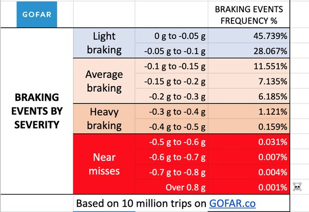
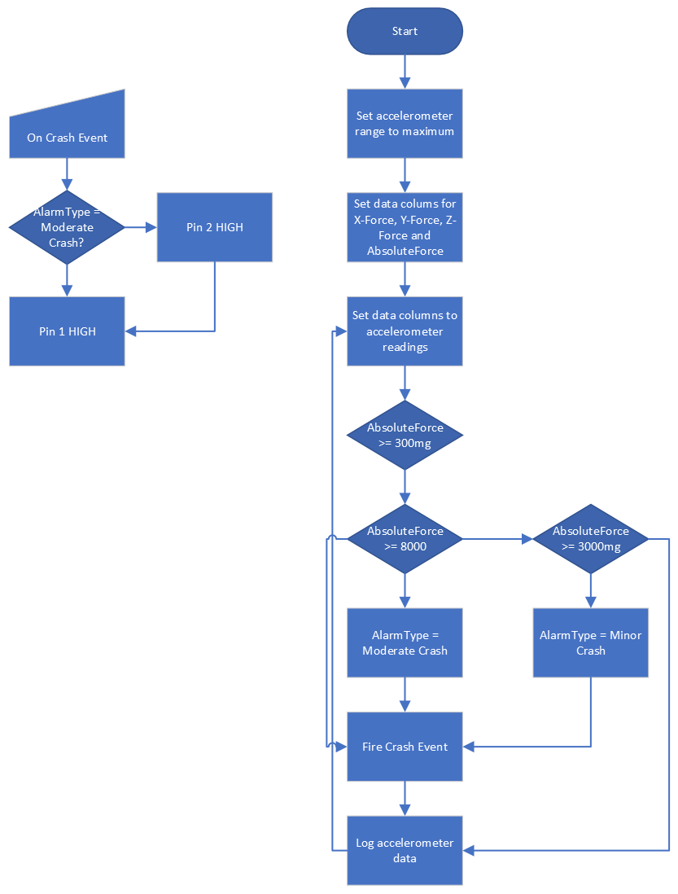
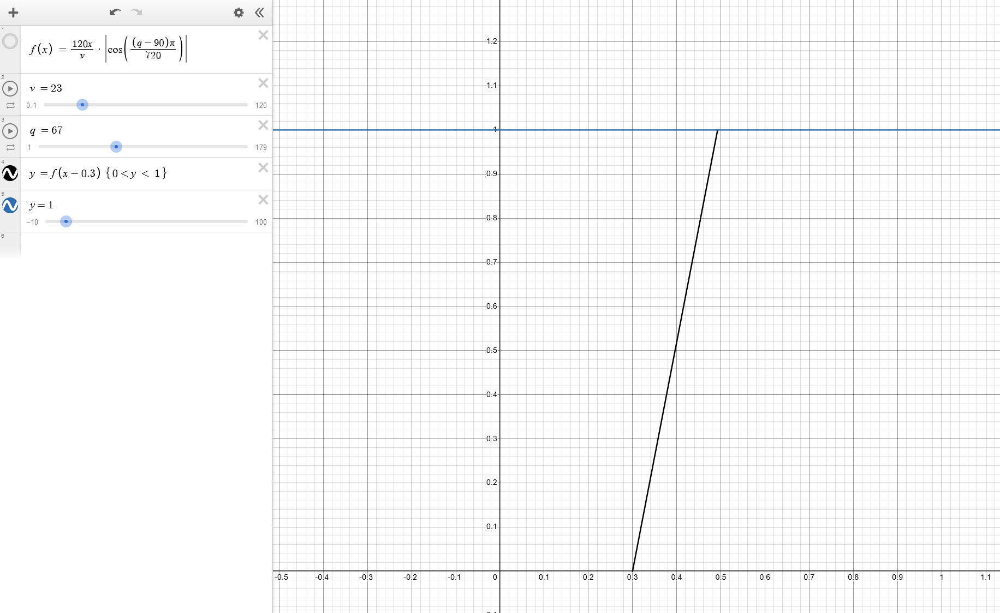

Upon reading the requirements in the brief, I began thinking of ideas. One of the first that came to mind would be car crash detection,
as I had seen the recent developments in crash avoidance in Tesla cars. With the idea of these cars with cameras in mind, I began to think of a project regarding car crashes.
I would then investigate driving data from cars and the expected bounds within which they should operate.
To do this, I looked at GoFar's data (see below) to get some expected conditions for driving.

Upon researching car crashes more, I realised they all had three things that could help me standardise an output and see if a crash occurred.
The G-force of the crash, the angle at which the impact occurred, and the speed at which the car was travelling.
I talked to a director of data-enabled businesses in Cork to find out more about what could be useful for companies wanting to use a product such as this.
When I went into this project, I realised there were two main customers.
Consumers and enterprises I went for Enterprise as I believed it would be a more interesting market to try to gain access to; through this, the product would have to be modular instead of being a static,
unexpandable project.
Through my research, I learned to use tools such as Desmos, the online graphing calculator,
to test my equations for my model and Winforms to create a UI.
My first objective would be to make the user interface for the advanced requirements model. After this I would aim to interact with the UI through code.
Once completed I would start on my embedded system, by creating a small battery holder and then programming the BBC Micro:bit to begin reading the accelerometer readings.
Once this was completed, I began forming equations that followed the data I found during my research.
To plan this project I would create flowcharts using Visio which is part of the Microsoft Office suite of software.
The first flowchart I would create would be for my embedded system. When creating this system I kept in mind ease of use and how it had to be modular if integrated in a bigger product,
as such I knew I would have to take advantage of the digital output ports on the Micro:bit.
With these ports the other developer working with my system would be able to add on their own modules such as their own SOS system,
or if the car has cameras, save a video recording of events leading up to the collision.

Upon the completion of the embedded system I would start on the design for the computer model's user interface. This would prove to be the longest part of the project.
Over two weeks I would develop the equations I used until I got my final equation that gave an accurate approximation of what my research data gave me.

fum
foo
bar
yMIJAnicAb0CQv3EDQMACgGMNqxD/Pm2OwHLjXUAZepB1FRoaXMgcHJvamVjdCB3 YXMgbWFkZSBieSBDaWFuIE1jTmFtYXJhIDE0MTE5MCwgc2lnbmVkIDIyOjM2IHdp dGggQmVuankgU3VnaXlhbWEgKGJzdWdpeWFtYUB2YXZlc3R1ZGlvcy5jb20pIGFz IHdpdG5lc3MgdG8gdGhpcyBzaWduaW5nLsLBXAQAAQoABgUCZepB1AAKCRCMNqxD /Pm2O7qHEACuZxTXSUGGDdHvkrhAwEpmAyKu+lMAPyrXG/UmZ5tForLP+s3xL1cC y2alpapga9LW6lDKusSQWlR/KrOgGXv1EqN59Nb2GT7/tc6rkc30RW2Gw3j2DAkL l0ZTA1Hmb2LdSnoZA9PsqPazHHoNuCHmwrBbdfOy8W6bboGNjQ8RfDoAWTBxP/k/ 2rez8Aju+M1kANZOppIy4TAuViTd7RX5phisSslnEWliOIY2gPXdzUlAFUUTcUul gwKkGtWYP/gfmABFTNDx6vdIj4190Fi86QowGrNVXp8a1S2EczE+cSlmhzSGTfQM BKQkZZUlNLMInxtSgZWL3Xzi7EMJGpzcs2d7lLj9Vq04x2UJgfPZBO5z6z55b7aG rLST919c0iB6cdoIDlM31hhEDsCHu/nnh2joSfin3c/QnvejMbuHmjmrQXwU6oeQ JzlJmJk/Ur2XNPC+jKj4Vm/FdwNqZJrLsd5GAdrMV6VA3HfSpFsir9/6WhUKNb+u B0QG2jli+8u4/K4v+alocOJA+u32nlbbX37sxKKALRjT4yxxX31/Y4H0udjElO6B Em33C8Ho53uDQaY1Wzl1/HDYlkKb2/uSA8XmSvjAPlhIXN0tqUCzDUnIgkJpr0tK 4F6mWfHwiHUrSrXCXQHHGfqeWgSPlEp8qfZ1yeBVZlHiHw3pRjzfXaRuSY0= =o2cW